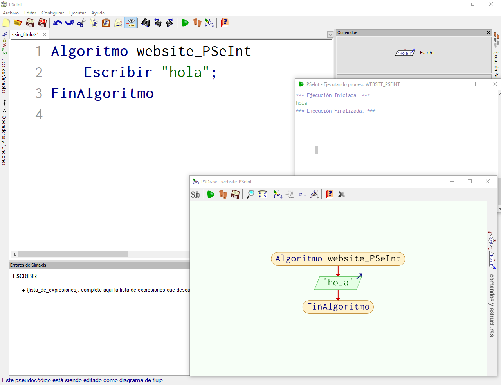

WebSite PSeInt
Rubén Plazas, Juan Maria Nolasco y Pablo SutilBases de datos

Para más información vaya al menú "base de datos"
Programación

Para más información vaya al menú "Programación"
Desarrollo Web

Para más información vaya al menú "Desarrollo Web"
Contacto

Para más información vaya al menú "Contacto"
PSeInt
¿Que es?
-Oracle
Oracle es una herramienta para la gestión de bases de datos, usada principalmente por las grandes empresas para que estas puedan controlar y gestionar una gran cantidad de contenidos desde un solo archivo.
-MySQL
MySQL sirve para almacenar toda la información que se desee en bases de datos relacionales, como también para administrar todos estos datos sin apenas complicaciones gracias a su interfaz visual y a todas las opciones y herramientas de las que dispone.
NoSQL
NoSQL (a veces llamado "no solo SQL") es una amplia clase de sistemas de gestión de bases de datos que difieren del modelo clásico de SGBDR (Sistema de Gestión de Bases de Datos Relacionales) en aspectos importantes, siendo el más destacado que no usan SQL como lenguaje principal de consultas.-Redis
Redis es un motor de base de datos en memoria, basado en el almacenamiento en tablas de hashes (clave/valor) pero que opcionalmente puede ser usada como una base de datos durable o persistente.
-Mongo DB
MongoDB es una base de datos distribuida, basada en documentos y de uso general que ha sido diseñada para desarrolladores de aplicaciones modernas y para la era de la nube.
-Firebase
Firebase Realtime Database es una base de datos alojada en la nube. Los datos se almacenan en formato JSON y se sincronizan en tiempo real con cada cliente conectado.
Funciones
Basicas
A continuacion veremos las funciones mas básicas de PSeInt
- Escribir
Permite escribir un objeto definido anteriormente en la consola de comandos o una palabra entrecomillada ("...")
Ahora vamos a explicar mejor todas las partes de la imagen:
1- Esta parte es la del codigo, la funcion de escritura se añade dandole click a 'Escribir' en la barra izquierda.
Puedes añadir una palabra entre comillas o por ejemplo una funcion que hayas leido antes

2- Una vez comprobado que el codigo funciona, podemos ver su estructura dandole al siguiente icono de la barra de arriba:

Se desplegaría la siguiente ventana:


Y ya de paso podemos apreciar como se representa una palabra escrita en el Diagrama de Flujo, con el romboide verde y la palabra o el nombre de la variables escrito dentro
Estructuras de Control
- If
- While
- If-Else
Es una sentencia de control que implica que se pueda realizar una accion en funcion de un caso determinado
En español equivale a un "Si...(caso)"

Aqui podemos ver una imagen que muestra como se vería en un diagrama de flujo esta sentencia
Esta sentencia de control, realizará la acción que se le ordene mientras se cumpla un caso determinado
 La sentencia de la imagen, vista tanto en diagrama de flujo como en código en si, representa quede
mientras que no se introduzca el numero '0', el programa seguirá sumando los números que se le introduzcan
La sentencia de la imagen, vista tanto en diagrama de flujo como en código en si, representa quede
mientras que no se introduzca el numero '0', el programa seguirá sumando los números que se le introduzcan
Es una sentencia como el if, pero que te permite añadir una accion por defecto a realizar en caso de que no se cumpla ninguno de los casos anteriores
 En la imagen podemos apreciar como definimos un algoritmo que segun la nota que se saque
se puede dar un caso "Aprobado" o en su defecto un caso "Desaprobado/Suspenso". El 'Sino' equivaldría al 'Else' en este caso
En la imagen podemos apreciar como definimos un algoritmo que segun la nota que se saque
se puede dar un caso "Aprobado" o en su defecto un caso "Desaprobado/Suspenso". El 'Sino' equivaldría al 'Else' en este caso
Bucles
- React
- Angular
- Android
Programación lado servidor (backend)
- NodeJS
- Spring Java
- Java Servlets
Desarrollo Web
HTML5
HTML5 es un estándar que sirve como referencia del software que conecta con la elaboración de páginas web en sus diferentes versiones, define una estructura básica y un código (denominado HTML) para la definición de contenido de una página web, como texto, imágenes, vídeos, juegos, entre otros…JavaScript Vanilla
Vanilla JavaScript es como se conoce al lenguaje JavaScript cuando se utiliza sin ninguna librería o framework.CSS3
CSS significa Cascade Style Sheets, también llamado Hojas de Estilo en Cascada. CSS es un lenguaje de marcado que se emplea para dar formato a un sitio web. Es decir, funciona en conjunto con los archivos HTML.WebApps
El concepto de WebApp se define por ser una versión de la página web adaptada y optimizada para cualquier dispositivo móvil, sin una previa instalación y la posibilidad de abrirla desde cualquier navegador sin importar el sistema operativo que estés utilizando.Sobre mi
Contacto
También puedes enviarme un email a la dirección: